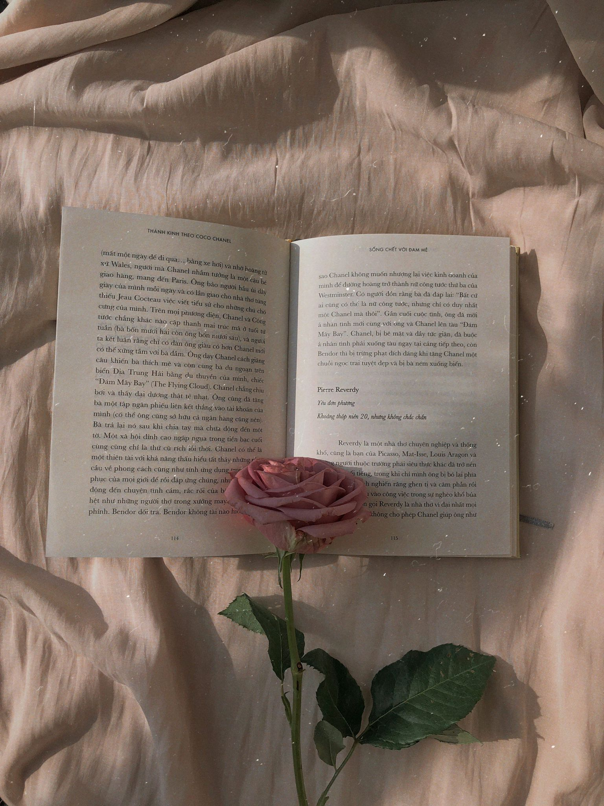

Welkom bij mijn website voor informatica. We hadden de opdracht gekregen om onze eigen website te maken en daar over allerlei verschillende informatica onderwerpen te vertellen, zoals kleurmodellen, het binair stelsel, bitmap en vectorafbeeldingen en compressie. Daarnaast moesten we ook wat over onszelf vertellen op de homepagina. Dus hierbij, ik ben Chaimae, en ik woon thuis met mijn vader, moeder, zusje en broertje.Ik ben een 15 jarige leerling op het Vlietland College, zit in vwo 5 en doe een gemengd profiel bestaande uit Natuur & Gezondheid en Natuur & Techniek. Ik ben van plan om na de middelbare school een medische studie te doen.
Nu zijn mijn eerste twee studiekeuzes beide numerus fixus, namelijk Geneeskunde en Tandheelkunde en zal ik dit jaar dus goed moeten zoeken naar een derde studiekeuze. Naast mijn interesse in de medische wereld, ben ik ook erg geïnteresseerd in zogenaamde 'interdisciplinaire studies' in Utrecht of Rotterdam. Bij dat soort studies worden meerdere richtingen en vakgebieden gecombineerd en als je zo'n studie dus volgt, zal je later bredere keus hebben bij het zoeken van een plan. Ik ben niet van plan om in Leiden te studeren (maar wie weet wat de toekomst mij brengt), maar ik wil wel de tijd nemen om goed alle mogelijke studies die mij aanspreken te 'onderzoeken'.Mijn klasgenoten hebben mij geadviseerd om tijdens het zoeken van een derde studiekeuze rekening te houden met mijn 'vaardigheden'. Ik ben best goed in het schrijven van lange verslagen en het zou me leuk lijken om daar later mijn werk van te maken. Wie weet schrijf ik later wel medische artikelen of publiceer ik onderzoeksresultaten in de vorm van verslagen.
Dat is alleen niet het enige wat ik later wil doen. Ik heb meer doelen in het leven dan alleen maar studeren en een goede (en natuurlijk leuke) baan te vinden. Daarnaast wil ik echt wat bijdragen aan de maatschappij, wat ik een belangrijk punt vind om in mijn hoofd te houden voor als ik ga solliciteren. Door bijvoorbeeld te werken in de gezondheidszorg, hoop ik mensen te kunnen helpen. Alleen wil ik wel dat ik nog ergens tijd zal vinden om mijn interesse in 'rechten' ergens te kunnen verkennen en misschien zelfs een bijdrage te leveren op dat gebied. Ik wil dus niet alleen mensen fysiek helpen, maar ook voor hun rechten en belangen opkomen, als ze daar tekortschieten. Dat gebeurt vaak in het buitenland en ik heb veel verhalen gehoord van zorgverleners die mensen in landen met onderontwikkelde zorg helpen en zo dus echt een verschil maken. Die verhalen hebben me zo erg geïnspireerd dat het zo’n beetje mijn levensmotto is geworden om net zoals hun te worden en zo een meer ‘compleet’ zorgverlener te worden. Ik wil dus echt een maatschappelijke impact maken en mijn interesses combineren. Ik zoek dus ook naar een derde studie die medisch is, maar wel juridische punten ‘behandelt’.
In mijn dagelijks leven ben ik naast school ook te vinden in de Hoogvliet waar ik werk als vulploegmedewerker, waar ik kennis maak met hoe het is om een baan te hebben. Vriendinnen hadden mij dat aangeraden en ik heb het erg naar mijn zin met ze. Daarnaast doe ik in mijn vrije tijd ook aan het lezen van boeken. Van jongs af aan vond ik lezen al leuk, al moet ik zeggen dat hoewel de passie er nog steeds is, ik veel minder lees. Dat komt deels omdat het op school steeds meer lijkt alsof lezen een plicht is en ik daardoor minder zin heb om een verhaal in te duiken. Om het lezen op school wat 'verdraagbaarder' te maken, kies ik wel altijd boeken uit die mijn favoriete genres matchen.Mijn favoriete boeken komen uit de genres biografie, waargebeurd, oorlog en thrillers. Het is een korte tijd geleden dat ik thrillers leuk begon te vinden. Ik moest een keer voor Nederlands een boek uitkiezen in de tweede klas en er waren geen leuke boeken met mijn favoriete genres dus werd mij aangeraden om een thriller te lezen en die vond ik erg leuk. Zo begon mijn passie voor lezen. Als ik geen behoefte heb aan het lezen van boeken en gewoon gelijk visueel een verhaal wil beleven, dan hou ik ervan om series en films te kijken. Ik vind het leuk om Disney en DreamWorks films, oude Nickelodeon, en bijvoorbeeld Turkse of Arabische series te binge streamen.
Naast lezen, houd ik ook van kalligraferen en doe ik dat al een tijdje. Als ik me verveel is het eerste waar ik naar grijp ook gelijk mijn stiften en zoek ik een leuke quote op Pinterest die ik kan overnemen op mijn blad. Ik probeer ook regelmatig nieuwe kalligrafie stijlen te leren of andere creatieve hobby’s te vinden.
Ik houd ook van het leren van nieuwe dingen en deze opdracht en het vak informatica zijn daar een goed voorbeeld van. Ik vind het erg interessant om te leren coderen, te experimenteren en creatief bezig te zijn met deze website dus ga ik jullie ook de gelegenheid geven meer van de website te verkennen. Klik op de kopjes van bovenstaand menu om meer te weten te komen over allerlei informatica onderwerpen.